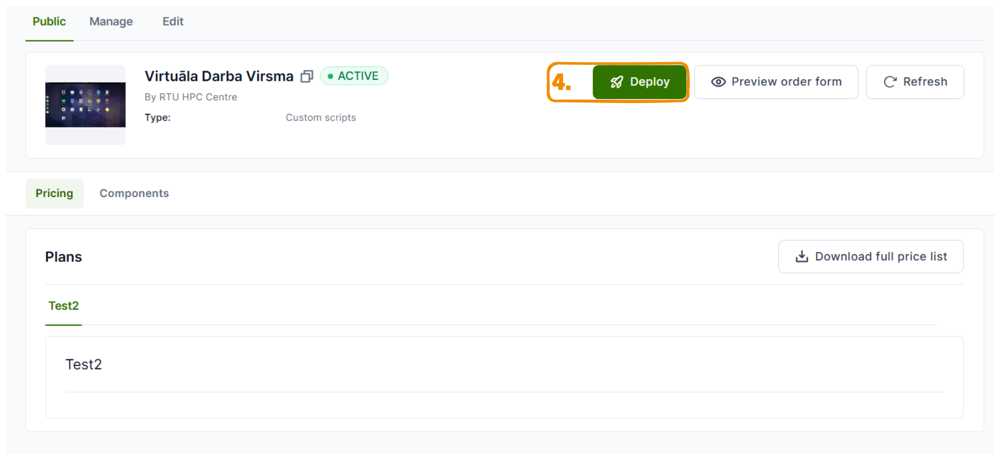
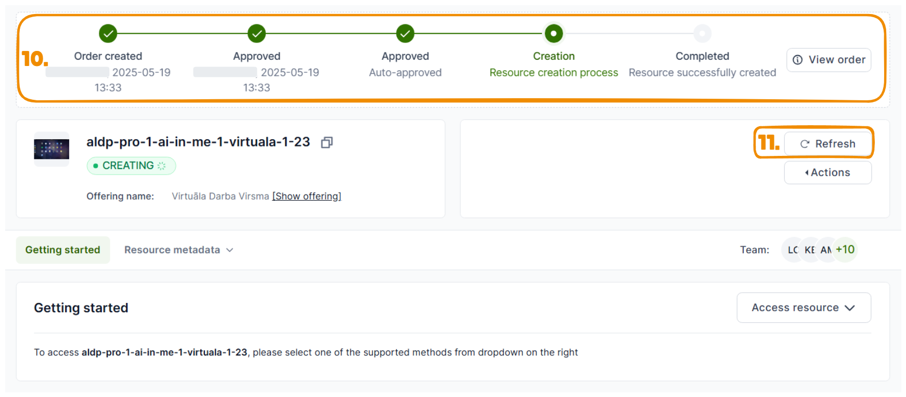
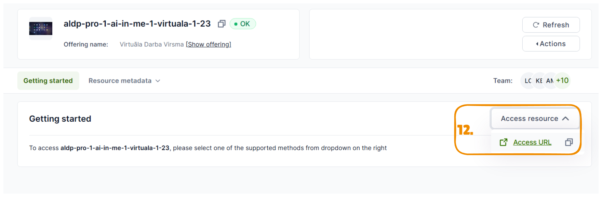

To deploy pre-configured virtual machine with remote desktop access:
go to Marketplace
and select Virtual Desktops section

chose ‘Virtuala Darba Virsma’ offering

Then [Deploy]

specify Organisation and Project under which you are intended to use chosen resource
inside image dropdown list you will see multiple options of images:
“UbuntuDesktop_raw” will be default clean Ubuntu 22 image with Remote Desktop access
number specified at the end of image file name *_60_raw or *_40G_raw sugests minimal Volume size required for Image

Select required flavor for vCPUs and RAM and disk size of a Volume
Create custom name of a resource.
We suggest to use name or initials, because it would be easyer to locate if in case of troubleshooting procedure if needed. Or push [Suggest name] button
Start creation process of a resource

This is deployment sequence status bar, to update it…
…press Refresh

After deployment is successfull, you will be able to access your resource by clicking on Access resource or going directly to Access URL
